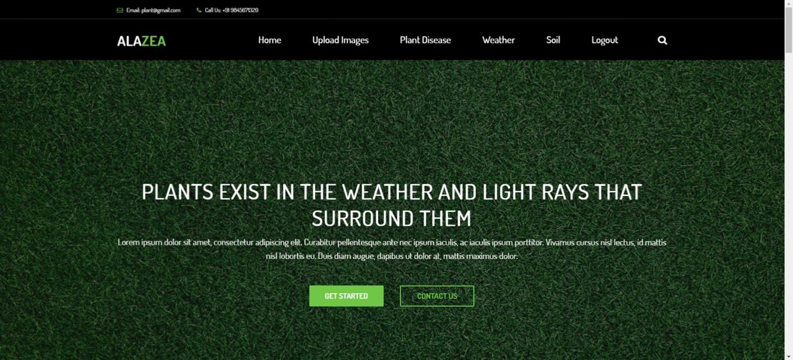

Hi,
I'm Gokulakrishnan Venkatesan
A curious learner and creative team player,
interested in the job role of Software Engineer with
expertise in Python.Seeking to contribute to
technological advancements and committed to
delivering robust and scalable solutions while staying
at the forefront of industry innovations.
Contact
EDUCATION
Master of Science in Computer Science
Agurchand Manmull Jain College, Chennai, Tamil Nadu
Score: 84%
Oct 2022 – May 2024Bachelor of Science in Computer Science
Agurchand Manmull Jain College, Chennai, Tamil Nadu
Score: 76%
June 2018 – May 2021Higher Secondary – 12th Grade
Kavitha Matric Higher Secondary School, Pallavaram
Score: 88%
June 2017 – Apr 2018SSLC
Kavitha Matric Higher Secondary School, Pallavaram
Score: 86%
June 2015 – Apr 2016Skills
Professional Skills
Without sharpening your weapon, standing on the battlefield would not increase your chance of winning.
HTML5
95%
CSS3
85%
PYTHON
85%
MYSQL
90%
Other Skills
A diverse set of additional skills to enhance development and design.
- Leadership Abilities
- Creativity and Innovation
- .Problem-Solving Skills
- Attention to Detail
- Adaptability and Flexibility
Projects
